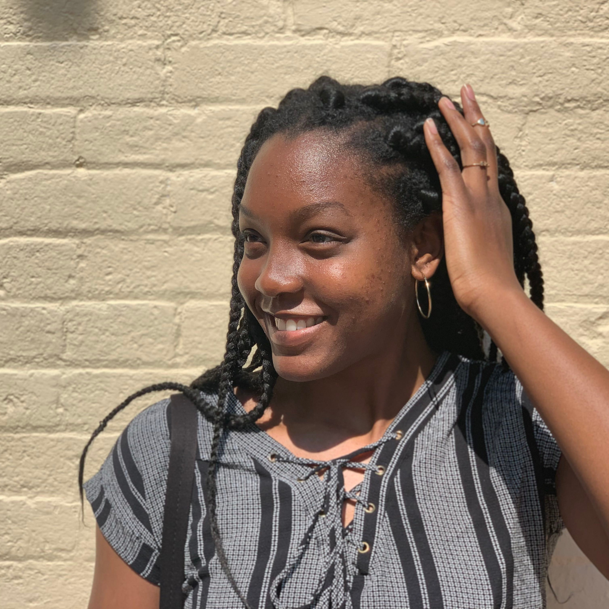
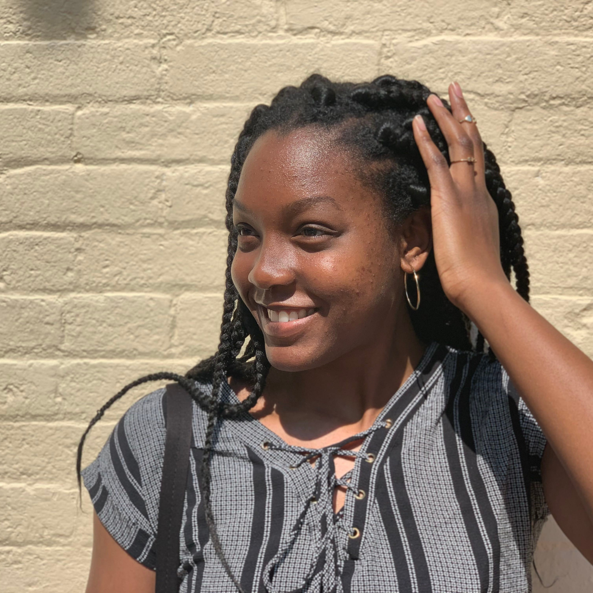
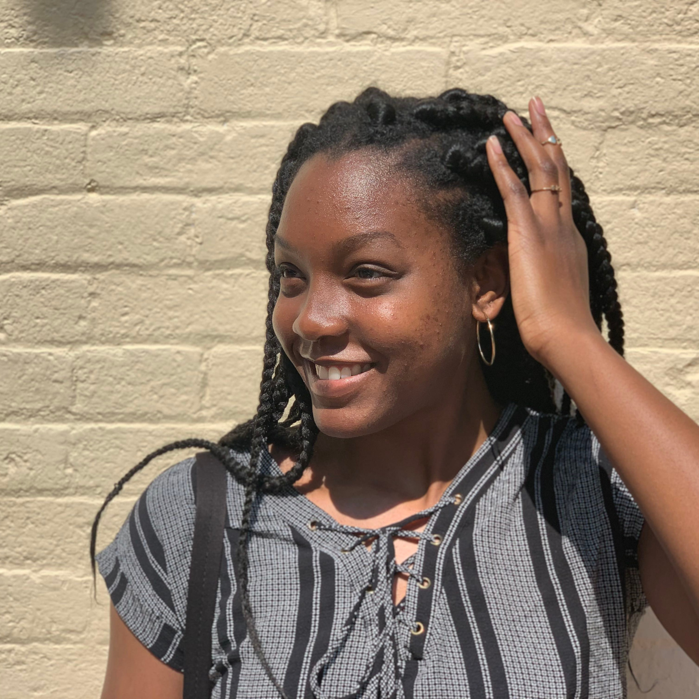

This is a collection of some of my favorite photos. When I am not taking selfies or photos of my food, I like to take photos of anything I enjoy looking at. I tend to take many photos of my surroundings, especially when traveling or experiencing a new place.
